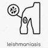

Leishmaniasis
Amp Glucantime 1.5gr/5ml N=7
نکته: درمناطق اندمیک با زخم های طول کشیده و با بیوپسی و رویت جسم لشمن تشخیص داده میشود.
نکته: گلوکانتیم بصورت داخل ضایعه هفته ای 1 بار تزریق میشود
نکته: مواردی که چندین محل درگیر است یا روی مفاصل است بصورت عضلانی تزریق میشود.
علائم بالینی از زخم های پوستی تا درگیری سیستمیک مولتی ارگان متغیر است .
لیشمانیازیس لوکالیزه پوستی ، به صورت یک پاپول صورتی رنگ بروز می کند که بزرگ شده و حالت ندول مانند ایجاد می کند و در نهایت به یک زخم بدون درد با حاشیه متورم تبدیل میشود.
لیشمانیازیس مخاطی با تخریب مخاط مشخص می شود. علائم شامل گرفتگی یا انسداد بینی، خونریزی مخاطی، افزایش ترشحات و ریزش بافت مرده است. برخی از آنها درد، تغییر شکل و التهاب دارند
لیشمانیازیس احشایی (کالا آزار) : علائم به صورت خستگی ، تب، کاهش وزن و اسپلنومگالی (با یا بدون هپاتومگالی) است . در موارد کمتر، میتواند به صورت تب حاد و با علائم پیشرونده رخ دهد.
نوع پوستی لوکالیزه
1️⃣ عفونت باکتریایی یا قارچی
2️⃣ اکتیما
3️⃣ زرده زخم
4️⃣ گزش عنکبوت
5️⃣ سیاه زخم
6️⃣ بدخیمی های پوستی
pyoderma gangrenosum 7️⃣
lichen simplex chronicus 8️⃣
Cutaneous tuberculosis 9️⃣
🔟 Orf
نوع جلدی مخاطی
1️⃣گرانولوماتوز وگنر
2️⃣لنفوما
Nasopharyngeal carcinoma3️⃣
Polymorphic reticulosis4️⃣
5️⃣سایر ضایعات مخرب پوستی
نوع احشایی
1️⃣مالاریا
Histoplasmosis2️⃣
Amebic liver abscess3️⃣
Schistosomiasis4️⃣
5️⃣لنفوم
6️⃣توبرکلوزیس
7️⃣ بروسلوز